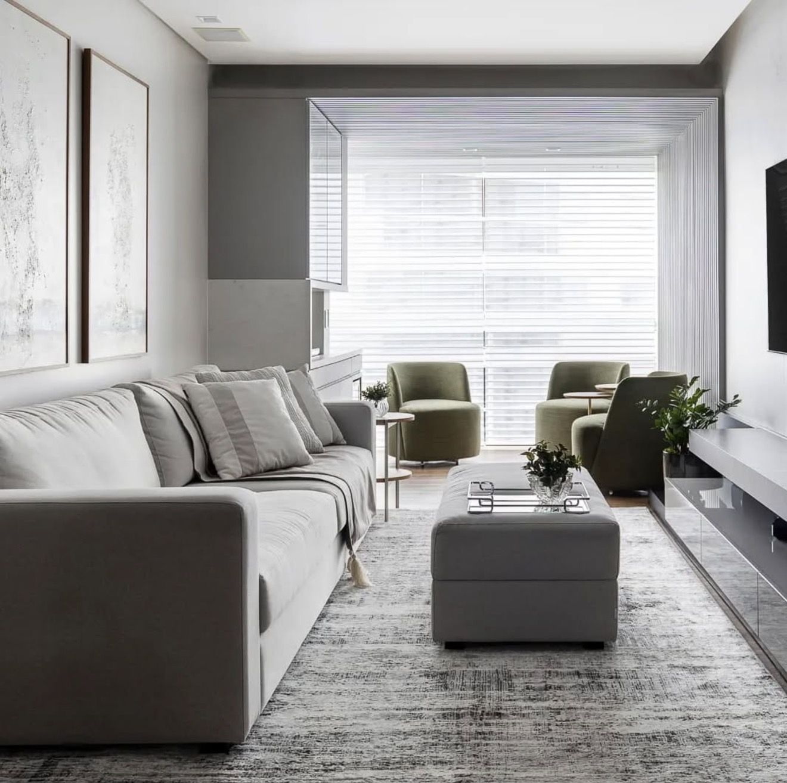
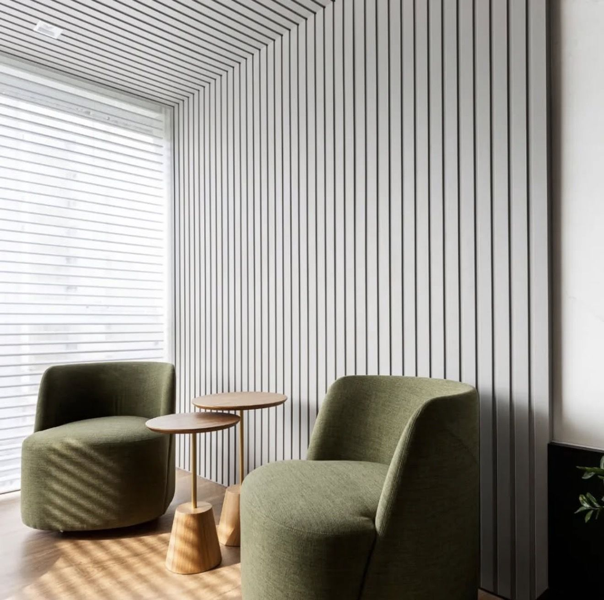

Ambientes que refletem a sua essência.
Projetamos, fabricamos e instalamos móveis sob medida, transformando espaços em ambientes únicos.
Mais de 20 anos criando ambientes personalizados.

Experiência que transforma espaços.
Há mais de 20 anos, a Arte Casual desenvolve soluções em móveis sob medida, unindo planejamento, fabricação e instalação para criar ambientes personalizados. Cada projeto é pensado para valorizar os espaços, respeitando as necessidades e a identidade de cada cliente.
Projetos executados
Ambientes reais, desenvolvidos, fabricados e instalados pela Arte Casual.
Nossos serviços
Projetos
Desenvolvimento de soluções personalizadas de acordo com as características e necessidades de cada ambiente.
Fabricação
Produção de móveis sob medida, considerando o planejamento e as especificações de cada projeto.
Instalação
Instalação dos móveis planejados, finalizando a transformação do ambiente.
Mais de 20 anos de experiência em móveis sob medida.
- Projetos sob medida
- Desenvolvimento personalizado
- Projeto, fabricação e instalação
Seu próximo ambiente começa aqui.
Entre em contato com a Arte Casual e converse conosco sobre seu próximo projeto.
Iniciar conversa no WhatsApp- (48) 98402-1824
- @arte_casual_moveis